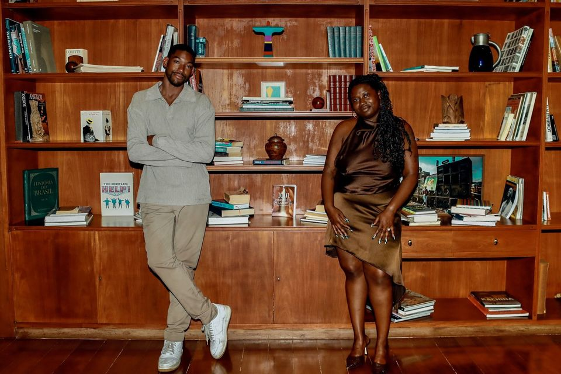
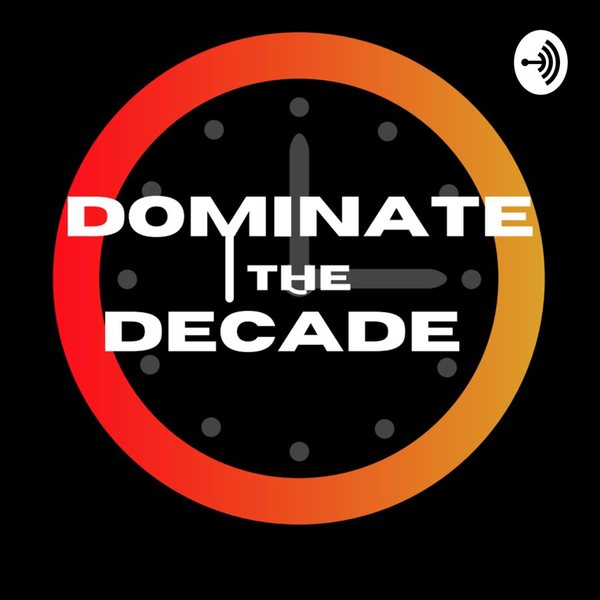
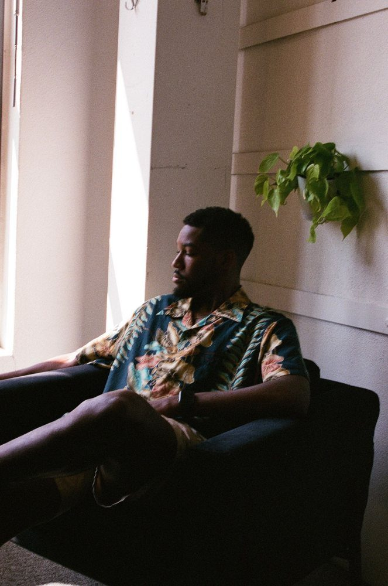
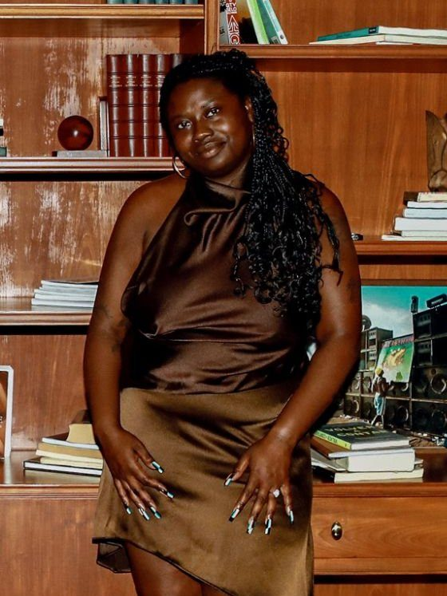

Invention 01Pre-orders open
kindling.
A card game for people who want more of each other.
334 cards across four decks, dialed from heat 1 to 5, with consent built into every rule. For couples, throuples, and friends.
The networkJoshua McKenzie German & Janel Moore
Seven shows, a studio, and the things we’re inventing.
The home for everything we make, together and on our own: podcasts and video led by our flagship, The Curious & Creative Podcast; a studio for founders and brands; photography; and inventions like Kindling. We met at the University of South Carolina and never stopped trading ideas.

01 The shows
History rabbit holes, policy, AI builds, and real conversations with the people shaping culture. The flagship leads; the rest sort by what dropped most recently.
 Podcast
Podcast
 Podcast
Podcast
 Podcast
Podcast

The archive · 2020–2023Every show, every episode, searchable in one place on the network’s shows page (opens in a new tab).
02 The latest
The newest episodes and videos from every show, newest first. This list refreshes from the network on its own.
All seven shows, one archive
Episodes and videos from all seven shows, in one searchable archive that updates itself as new ones drop.
03 The studio
Part agency, part production house, fully curious. We help founders, brands, and teams figure out what to say, how to make it, and why anyone should care.
Agency-grade strategy from TBWA\Chiat\Day, Goodby Silverstein & Partners, and Wieden+Kennedy, plus the operational chops of banking and political campaigns. For founders, brands, and teams who treat creative as serious work.
Brand strategy, narrative work, communications and connections planning. The through-line between what you make and the people who should care.
Naming, identity, voice: the small details that make a brand feel like something. Zero-to-one launches and refreshes.
Podcasts, video, photography, written work. We make the thing end to end, or step in where you need a hand.
A sharp outside brain: AI workflows that actually help, second-opinion sessions, sprints, and retainers.
04 Inventions & more
Curious & Creative is the umbrella. Under it: products, tools, and pictures that start as “what if.”
A card game for people who want more of each other.
334 cards across four decks, dialed from heat 1 to 5, with consent built into every rule. For couples, throuples, and friends.
Tools Joshua builds on camera, like the Veritas bias radar and the 2026 resolution tracker. Watch them get made, mistakes included.
Watch the series PhotographyPortraits, fashion, live events, and travel, Los Angeles to Rio de Janeiro, on 35mm film and digital.
See the photography05 Who we are
A strategist with a magpie brain. A storyteller with a microphone.
We both came up at the University of South Carolina: Joshua in Mass Communications, writing for The Daily Gamecock; Janel in Global Studies, on her way into politics and policy. The conversations never stopped after graduation. Curious & Creative is what happens when we follow the interesting thing all the way to something real.

Co-founder
Senior Connections Strategist at TBWA\Chiat\Day, after Goodby Silverstein & Partners and Wieden+Kennedy. Photographer. Hosts The Eclectic Polymath, God Is Brazilian, and Approachable AI.

Co-founder
Technology in global corporate banking at Truist, with experience at JP Morgan, and a fundraising veteran of six political campaigns across four states. Hosts Too Much to Tweet and Aspiring Abolitionist.
Got a project, a guest pitch, or want to swap notes on good work? Pick a door. We read every note.